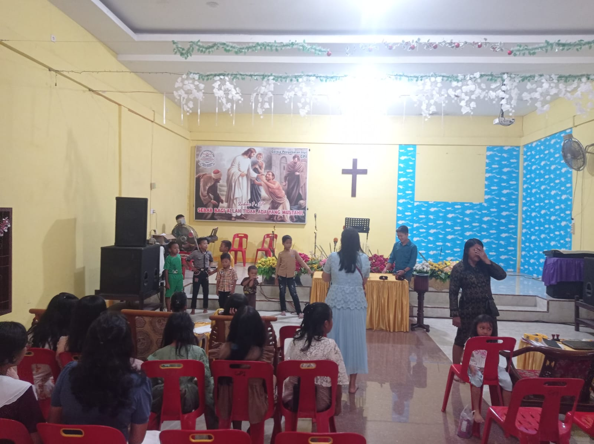

Selamat datang di Website GPI Jemaat Bersinar!
Jadwal Ibadah
Ibadah Umum: Minggu, pukul 10.30 WIB
Sekolah Minggu: Minggu, pukul 08.30 WIB
Ibadah Rumah Tangga: Selasa, pukul 19.00 WIB
Galeri Kegiatan

Lokasi Gereja
Lokasi Gereja